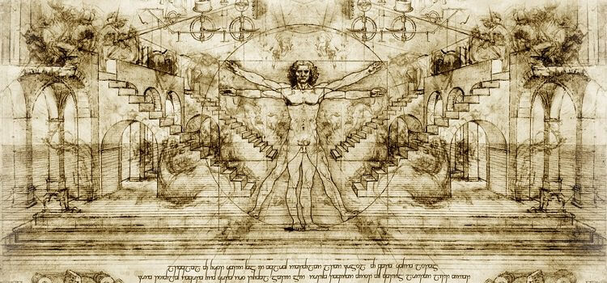

Leonardo da Vinci, his Life and Artworks

Leonardo da Vinci was a true genius who graced this world with his presence from April 15, 1452 to May 2, 1519. He is among the most influential artists in history, having left a significant legacy not only in the realm of art but in science as well, each discipline informing his mastery of the other. Da Vinci lived in a golden age of creativity among such contemporaries as Raphael and Michaelangelo, and contributed his unique genius to virtually everything he touched. Like Athens in the age of Pericles, Renaissance Italy is a summit in human history. Today, no name better seems to symbolize Renaissance age than Leonardo da Vinci.
Leonardo da Vinci was born in a Tuscan hamlet near Vinci. He began a nine-year apprenticeship at the age of 14 to Andrea del Verrocchio, a popular sculptor, painter and goldsmith who was an important figure in the art world of the day. At Verrocchio's busy Florence studio, the young Leonardo likely met such masters as Sandro Botticelli while working beside fellow apprentices Domenico Ghirlandaio, Pietro Perugino and Lorenzo di Credi. Verrocchio, who had learned his craft under the master Donatello, was the officially recognized sculptor for the Medici family, the rulers of Italy during this era. Under Verrocchio's tutelage, da Vinci probably progressed from doing various menial tasks around the studio to mixing paints and preparing surfaces. He would have then graduated to the study and copying of his master's works. Finally, he would have assisted Verrocchio, along with other apprentices, in producing the master's artworks. Da Vinci not only developed his skill in drawing, painting and sculpting during his apprenticeship, but through others working in and around the studio, he picked up knowledge in such diverse fields as mechanics, carpentry, metallurgy, architectural drafting and chemistry. In 1473, when he was more than halfway through his studies with Verrocchio, he completed Landscape Drawing for Santa Maria della Neve, a pen and ink depiction of the Arno River valley. It is the earliest work that is clearly attributable to da Vinci. Leonardo da Vinci's drawings would become an essential part of his legacy. Da Vinci sketched prolifically, planning inventions, exploring human anatomy, drawing landscapes, and blocking out plans for paintings such as The Virgin of the Rocks and his sole surviving mural, The Last Supper.
Much of his other creative output during his time with Verrocchio was credited to the master of the studio although the paintings were collaborative efforts. Over the years, historians have closely examined such Verrocchio masterpieces as The Baptism of Christ and The Annunciation to weigh in on which specific figures da Vinci was responsible for. In the "Baptism of Christ," which dates to 1475, experts speculate that one of the angels is da Vinci's own work, while in "The Annunciation," produced within the same time period, experts detect the work of the apprentice artist's brush in the angel's wings and the background. In fact, historians x-rayed "The Annunciation" to definitively distinguish between Verrocchio's heavier brush strokes with lead-based paint from da Vinci's lighter, water-based paint strokes. Although a member of the Florence painters' guild as of 1472, the artist continued his studies with Verrocchio as an assistant until 1476. The influences of his master are evident in the remarkable vitality and anatomical correctness of the Leonardo paintings and drawings.
After leaving the Verrocchio studio to set up his own, da Vinci began laying the groundwork for his artistic legacy. Like his contemporaries, he focused on religious subjects, but he also took portrait commissions as they came up. Over the next five years or so, he produced several notable paintings, including Madonna of the Carnation, Ginevra de' Benci, Benois Madonna, Adoration of the Magi, and St. Jerome in the Wilderness. The latter two pieces are unfinished. Leonardo da Vinci received a commission to paint his "Adoration of the Magi" from Florence church elders who planned to use it as an altarpiece. This artwork is historically significant by virtue of the innovations da Vinci made that were unique among the art conventions of the 1480s. He centered the Virgin and Christ child in the scene whereas previous artists had placed them to one side. Da Vinci improved on standard practices of perspective by making changes in clarity and color as objects became increasingly distant. Unfortunately, he did not complete the commission due to a better offer from the Duke of Milan to become the resident artist at his court. While in Milan, the artist called upon his varied interests and knowledge to create stage sets and military designs for the Duke as well as paintings. Early in his tenure at court, da Vinci produced his first version of Virgin of the Rocks, a six-foot-tall altarpiece also called the "Madonna of the Rocks." In this painting, which dates to 1483, the artist experiments with blending the edges of objects in indistinct light to create a sort of smoky effect known as sfumato, a technique the artist would continue to develop in his future works. It was perhaps because of his desire to fine-tune this technique that his other surviving painting from his years in Milan, The Last Supper, deteriorated so quickly. The artist used oil-based paint on plaster for this scene of Jesus and his apostles at the table because his customary water-based fresco paints were difficult to blend for the sfumato effect he sought. Within only a few decades, much of the painting had flaked away from the wall in its location at the Santa Maria del Grazie convent. The canvas of Leonardo da Vinci's "Last Supper" that now hangs in the Louvre is, in large part, a reproduction of the failed fresco.
A certain ambivalence is apparent in Leonardo da Vinci's military engineering. Leonardo was irresistibly attracted by the possibility of perfecting weapons, not only as a technical challenge but also more profoundly in terms of the physical principles involved. The design of cannons embodying his beloved laws of percussive motion (with acoustical implications) proved to be especially fascinating for him. But against such attractions we have to set his undoubted abhorrence of war in human terms. Some of his most spectacularly menacing designs for military machinery, Design for a Giant Crossbows carry strong implications of the weapons' power to subjugate their human creators, so that man becomes the helpless servant of his own inventions. His famous drawing of a cannon foundry takes this feeling a stage further, subordinating the carefully descriptive drawing of the mechanical elements to its total impact of expressive turmoil, as the Lilliputian progenitors of the obscenely monstrous gun strive frantically to deal with their creation. The emotional implications of this drawing are unmistakably the same as his profetie, recalling in particular the riddle of the cannon cast in a pit: 'Emerging from the ground with terrible noise it will stun those standing nearby and with its breath it will kill men and ruin cities and castles.' Man's brutal destructiveness towards man and nature is a recurrent theme of his literary compositions.
Centuries have passed since Leonardo recorded his thoughts and designs for machines intended to simplify the routine tasks that he saw being performed around him. His purpose was to have the work done more quickly and easily, while maintaining standards of uniformity and precision. As adviser to heads of state, military commanders, nobles, and estate managers, he acted as designer, engineer, architect, geologist, anatomist, master of ordnance, and seer. Having visualized a mechanical solution to a problem he sketched the parts and the assembly, noted the working directions, assigned to himself further tasks for study, and moved on to other problems. Yet no solution was ever adequate, for he would return later to some similar device to accomplish the same task by using different parts or a different assembly of parts.
The Adoration of the Magi is an unfinished early painting by Leonardo da Vinci. Leonardo was given the commission by the Augustinian monks of San Donato a Scopeto in Florence, but departed for Milan the following year, leaving the painting unfinished. It has been in the Uffizi Gallery in Florence since 1670. The Virgin Mary and Child are depicted in the foreground and form a triangular shape with the Magi kneeling in adoration. Behind them is a semicircle of accompanying figures, including what may be a self-portrait of the young Leonardo (on the far right). In the background on the left is the ruin of a pagan building, on which workmen can be seen, apparently repairing it. On the right are men on horseback fighting, and a sketch of a rocky landscape. The ruins are a possible reference to the Basilica of Maxentius, which, according to Medieval legend, the Romans claimed would stand until a virgin gave birth. It is supposed to have collapsed on the night of Christ's birth (in fact it was not even built until a later date). The ruins dominate a preparatory perspective drawing by Leonardo, which also includes the fighting horsemen. The palm tree in the center has associations with the Virgin Mary, partly due to the phrase 'You are stately as a palm tree' from the Song of Solomon, which is believed to prefigure her. Another aspect of the palm tree can be the usage of the palm tree as a symbol of victory for ancient Rome, whereas in Christianity it is a representation of martyrdom triumph over death so in conclusion, we can say that the palm, in general, represents triumph.
The other tree in the painting is from the carob family, the seeds from the tree are used as a unit of measurement. They measure valuable stones and jewels. This tree and its seeds are associated with crowns suggesting Christ as the king of kings or the Virgin as the future Queen of heaven, also that this is nature's gift to the new born Christ. As with Michelangelo's Doni Tondo, the background is probably supposed to represent the Pagan world supplanted by the Christian world, as inaugurated by the events in the foreground. The Adoration of the Magi is perhaps one of Leonardo da Vinci's strangest and most fertile compositions. By combining figures of pleading old men and armed horsemen, he transformed a banal biblical subject into a scene from human history. At the same time, he took the technique of non finito to its extreme. The figures and architectural elements boldly delineated and filled out in earth colors on the five boards that make up this panel anticipate the type of sketchwork that will characterize modern art. This picture is remarkable for its extreme concentration and power.

Mona Lisa, also known as La Gioconda, is the wife of Francesco del Giocondo. This painting is painted as oil on wood. The original painting size is 77 x 53 cm (30 x 20 7/8 in) and is owned by the Government of France and is on the wall in the Louvre in Paris, France. This figure of a woman, dressed in the Florentine fashion of her day and seated in a visionary, mountainous landscape, is a remarkable instance of Leonardo's sfumato technique of soft, heavily shaded modeling. The Mona Lisa's enigmatic expression, which seems both alluring and aloof, has given the portrait universal fame. The Mona Lisa's famous smile represents the sitter in the same way that the juniper branches represent Ginevra Benci and the ermine represents Cecilia Gallerani in their portraits, in Washington and Krakow respectively. It is a visual representation of the idea of happiness suggested by the word "gioconda" in Italian. Leonardo made this notion of happiness the central motif of the portrait: it is this notion that makes the work such an ideal. The nature of the landscape also plays a role. The middle distance, on the same level as the sitter's chest, is in warm colors. Men live in this space: there are a winding road and a bridge. This space represents the transition between the space of the sitter and the far distance, where the landscape becomes a wild and uninhabited space of rocks and water which stretches to the horizon, which Leonardo has cleverly drawn at the level of the sitter's eyes. The painting was among the first portraits to depict the sitter before an imaginary landscape and Leonardo was one of the first painters to use aerial perspective. The enigmatic woman is portrayed seated in what appears to be an open loggia with dark pillar bases on either side. Behind her, a vast landscape recedes to icy mountains. Winding paths and a distant bridge give only the slightest indications of human presence. The sensuous curves of the woman's hair and clothing, created through sfumato, are echoed in the undulating imaginary valleys and rivers behind her. The blurred outlines, graceful figure, dramatic contrasts of light and dark, and overall feeling of calm are characteristic of da Vinci's style. Due to the expressive synthesis that da Vinci achieved between sitter and landscape, it is arguable whether Mona Lisa should be considered as a traditional portrait, for it represents an ideal rather than a real woman. The sense of overall harmony achieved in the painting especially apparent in the sitter's faint smile reflects the idea of a link connecting humanity and nature. In the Renaissance which brought together all human activities, art meant science, art meant truth to life: Leonardo da Vinci was a great figure because he embodied the epic endeavor of Italian art to conquer universal values: he who combined within himself the fluctuating sensitivity of the artist and the deep wisdom of the scientist, he, the poet and the master.
In his Mona Lisa, the individual, a sort of miraculous creation of nature, represents at the same time the species: the portrait goes beyond its social limitations and acquires a universal meaning. Although Leonardo worked on this picture as a scholar and thinker, not only as a painter and poet, the scientific and philosophical aspects of his research inspired no following. But the formal aspect - the new presentation, the nobler attitude, and the increased dignity of the model - had a decisive influence over Florentine portraits of the next twenty years, over the classical portrait. With his Mona Lisa, Leonardo created a new formula, at the same time more monumental and more lively, more concrete and yet more poetic than that of his predecessors. Before him, portraits had lacked mystery; artists only represented outward appearances without any soul, or, if they showed the soul, they tried to express it through gestures, symbolic objects, or inscriptions. The Mona Lisa alone is a living enigma: the soul is there, but inaccessible.
Upon the French invasion of Milan, the artist returned home, via Venice and Mantua, to Florence. His reputation preceded him, and he was lauded by old friends and up-and-coming artists captivated with his innovations in art. During this final era of his life, da Vinci completed a greater number of paintings than he had thus far. When he resettled in Florence in 1500, the artist made preliminary progress on his painting, Virgin and Child with Saint Anne," which he would set aside unfinished, not to be completed for another 10 years. Leonardo began creating his most well-known and replicated work, Mona Lisa, a couple of years later when he received a commission from Francesco del Giocondo to paint his wife. The precise date of completion for "Mona Lisa" is still in question, but many historians agree that da Vinci began the masterpiece in 1503. Leonardo da Vinci also accepted a commission for a mural to be installed in the Hall of 500 at Palazzo Vecchio in Florence. The subject was a battle scene at Anghiari, and the painting depicted a tangle of muscular horses and warriors. It was, however, destined to be unfinished. Contemporary master Michelangelo received a commission to paint the Battle of Cascina on the opposite wall, also a work left unfinished. Nothing of da Vinci's battle scene survived, except for a copy by artist Peter Paul Rubens and Leonardo's own preliminary sketches. In approximately the same period, the artist created his second version of the painting, "Virgin of the Rocks," which was likely a commission for installation in a chapel at Milan's church of San Francesco Maggiore. Chief differences between the two versions include color choices, lighting and details of composition.
Leonardo returned to Milan in 1506 to accept an official commission for an equestrian statue. Over the course of this seven-year residency in the city, the artist would produce a body of drawings on topics that ranged from human anatomy to botany, plus sketches of weaponry inventions and studies of birds in flight. The latter would lead to his exploratory drawings of human flight machine. All of his drawings during this time reflected da Vinci's interest in how things are put together and how they work. Upon his departure from Milan in 1513, Leonardo spent time in Rome. In October 1515, King Francis I of France recaptured Milan. The monarch had conferred upon him the title of premier architect, artist and mechanic to the king. In 1516, he entered Francis' service, and then journeyed to his last place of residence near the Fontainebleau court of French King Francis I. Many historians believe Leonardo completed his final painting, St. John the Baptist, at his rural home in Cloux, France. This masterwork exhibits his perfection of the sfumato technique. Leonardo died at Clos Luce, on 2 May 1519 at the age of 67. The cause is generally stated to be recurrent stroke. Francis I had become a close friend. It was recorded that the king held Leonardo's head in his arms as he died, although this story, beloved by the French and portrayed in romantic paintings by Ingres, may be legend rather than fact. He was buried at Chapel of Saint-Hubert, Amboise, France.
Within the artworks created by his own circle of peers, the influence of Leonardo da Vinci's works is readily evident. Raphael and even sometime rival Michaelangelo adopted same of da Vinci's signature techniques to produce similarly active, anatomically realistic figures. His innovative breaks from the artistic standards of his day would guide generations of artists that followed. Although da Vinci painted the customary religious scenes of his era, such as the Magi and the Madonna and child, his unique placement of key figures, his signature techniques and his improvements upon perspective were all previously unheard of. In The Last Supper, the way in which he isolated Christ at the epicenter of the scene and made each apostle a separate entity, yet at the same time united them all in the moment, is a stroke of genius that subsequent artists throughout history would strive to replicate.
To the present day, art enthusiasts worldwide consider the iconic "Mona Lisa" to be among the greatest paintings of all time. Her image continues to appear on items ranging from T-shirts to refrigerator magnets, and rather than trivializing the import of the masterpiece, this popularity serves to immortalize Leonardo's paintings and drawings. They still remain at the forefront of people's hearts and minds centuries after his death. Just like William Shakespeare on literature, and Sigmund Freud on psychology, Leonardo's impact on art is tremendous. Throughout his life, Leonardo da Vinci avoided the intrigues of worldly ambitions and vanity. He was a reserved and withdrawn man, not concerned with glory, and yet absolutely sure of the value of his abilities. Along with a small band of contemporary Renaissance figures, Leonardo da Vinci becomes the center of a movement of artists that has permanently enriched western culture.